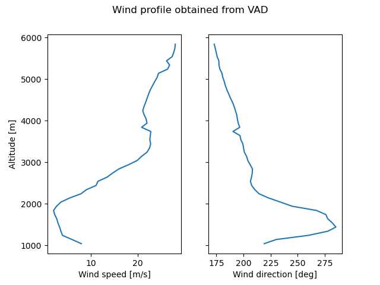

Note
Go to the end to download the full example code
Calculate and Plot VAD profile#
Calculates a VAD and plots a vertical profile of wind
max height 2682.0 meters
min height -54.0 meters
max height 5272.0 meters
min height 2.0 meters
max height 7815.0 meters
min height 4.0 meters
max height 10403.0 meters
min height 6.0 meters
max height 14259.0 meters
min height 10.0 meters
max height 18533.0 meters
min height 15.0 meters
max height 22800.0 meters
min height 19.0 meters
max height 27060.0 meters
min height 24.0 meters
max height 31310.0 meters
min height 28.0 meters
max height 35549.0 meters
min height 32.0 meters
max height 39777.0 meters
min height 37.0 meters
max height 43991.0 meters
min height 41.0 meters
max height 50263.0 meters
min height 47.0 meters
max height 58621.0 meters
min height 56.0 meters
max height 71002.0 meters
min height 69.0 meters
max height 87118.0 meters
min height 85.0 meters
max height 106740.0 meters
min height 105.0 meters
max height 125476.0 meters
min height 124.0 meters
max height 143293.0 meters
min height 143.0 meters
max height 160000.0 meters
min height 160.0 meters
Text(0.5, 0.98, 'Wind profile obtained from VAD')
# Author: Daniel Wolfensberger (daniel.wolfensberger@meteoswiss.ch)
# License: BSD 3 clause
import matplotlib.pyplot as plt
import numpy as np
from open_radar_data import DATASETS
import pyart
# Read in a sample file
filename = DATASETS.fetch("MLA2119412050U.nc")
radar = pyart.io.read_cfradial(filename)
# Loop on all sweeps and compute VAD
zlevels = np.arange(100, 5000, 100) # height above radar
u_allsweeps = []
v_allsweeps = []
for idx in range(radar.nsweeps):
radar_1sweep = radar.extract_sweeps([idx])
vad = pyart.retrieve.vad_browning(
radar_1sweep, "corrected_velocity", z_want=zlevels
)
u_allsweeps.append(vad.u_wind)
v_allsweeps.append(vad.v_wind)
# Average U and V over all sweeps and compute magnitude and angle
u_avg = np.nanmean(np.array(u_allsweeps), axis=0)
v_avg = np.nanmean(np.array(v_allsweeps), axis=0)
orientation = np.rad2deg(np.arctan2(-u_avg, -v_avg)) % 360
speed = np.sqrt(u_avg**2 + v_avg**2)
# Display vertical profile of wind
fig, ax = plt.subplots(1, 2, sharey=True)
ax[0].plot(speed * 2, zlevels + radar.altitude["data"])
ax[1].plot(orientation, zlevels + radar.altitude["data"])
ax[0].set_xlabel("Wind speed [m/s]")
ax[1].set_xlabel("Wind direction [deg]")
ax[0].set_ylabel("Altitude [m]")
fig.suptitle("Wind profile obtained from VAD")
Total running time of the script: (0 minutes 4.223 seconds)